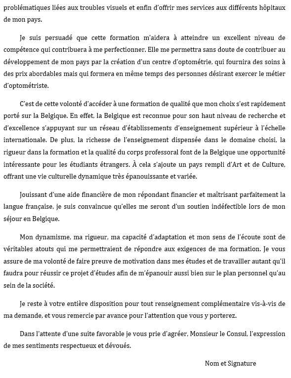

1. Qu’est-ce- que VFS Global ?
Afin de pouvoir proposer un service irréprochable, l’ambassade collabore désormais avec l’entreprise VFS Global. Tous les dépôts de demande de visa pour la Belgique, le Luxembourg, la Norvège (court séjour) et les pays bas se font auprès de cet organisme.
Site de VFS : vfs.global
Sur base d’un numéro de contrôle délivré par viabel (VEB), le site internet de VFS globale est accessible pour prendre rendez-vous dans le cadre de l’introduction d’une demande de visa. Lors de la prise de contact avec VFS, le numéro de contrôle VEB sera demandé pour confirmer le rendez-vous. Sans ce numéro, il est impossible d’obtenir un rendez-vous.
2. Comment prendre rendez-vous en ligne à VFS Global ?
Dorénavant le rendez-vous est pris via le système de calendrier électronique par le demandeur lui-même ou par toute autre personne ayant une connaissance minimale d’internet. Le candidat peut ainsi fixer et au besoin annuler lui-même son rendez-vous.
Comment procéder ?
- Rendez-vous sur le site internet : https://progenda.be/calendars/consubellubumbashi
- Cliquer sur “Réserver maintenant”;
- Choisir le type de visa souhaité (ceci est très important pour la suite);
- Cliquer sur la date et l’heure convenable (la fenêtre de détails du rendez-vous s’ouvrira;
- Indiquer le nom et le prénom du demandeur, le numéro de téléphone portable et l’adresse e-mail de la personne de contact (pour le numéro de téléphone, utiliser le format suivant : +243…);
- Dans la rubrique “notes”, le demandeur peut indiquer ses remarques éventuelles, expliciter plus en détails le motif du séjour et éventuellement mentionner le n° de référence Visa On Web(VOW) du demandeur s’il le connaît déjà;
- Cliquer sur “Confirmer” (la synthèse de votre rendez-vous apparaîtra);
- Cliquer sur “Ok”;
- Le candidat recevra automatiquement un e-mail de confirmation reprenant les modalités pratiques pour remplir votre formulaire de demande de visa en ligne et indiquant les documents à produire à l’appui de votre dossier. La procédure pour annuler le rendez-vous.
3. Quel sont les documents à fournir ?
- Passeport
- Lettre de motivation manuscrite
- Prise en charge
- Certificat médical
- Tous les diplômes obtenus après le Baccalauréat
- Admission de l’établissement belge
- Equivalence
- CNI
- Formulaire de demande de visa remplir en ligne
- Preuve de payement de la redevance
- Frais de légalisation de casier judiciaire 36 000 Frs CFA
- Frais de demande de visa 180€
Exemple de lettre pour certification de casier judiciaire

4. Ordre de classement des documents
Les documents sont photocopiés et classés ainsi :
1ere chemise:
- Formulaire de demande de Visa remplir en ligne
- 03 copies du Passeport
- Copies de la CNI
- Une copie de la confirmation de paie de la redevance
- Copie de la prise en charge
- Copie de l’admission de l’établissement belge
- Copie de l’équivalence
- Copie des diplômes à partir du Baccalauréat
- Copie extrait de casier judiciaire
- Copie certificat médicale
- Lettre de motivation
2eme chemise
- Formulaire de demande de Visa remplir en ligne
- 3 copies du Passeport
- Copie de la confirmation de la paie de la redevance
- Copie de la prise en charge
- Copie de l’admission de l’établissement belge
- Copie de l’équivalence
- Copie des diplômes à partir du Baccalauréat
- Copie certificat médicale
- Lettre de motivation
3eme chemise
- Formulaire de demande de Visa en ligne
- 3 copies du Passeport
- Copie de la confirmation de la paie de la redevance
- Copie de la prise en charge
- Copie de l’admission de l’établissement belge
- Copie de l’équivalence
- Copie des diplômes à partir du Baccalauréat
- Copie retrait de casier judiciaire
- Copie certificat médicale
- Lettre de motivation
4eme chemise
- Original de casier judiciaire
- Copies de la CNI
5. Le casier judiciaire
5.1 Où retirer le casier judiciaire ?
Le casier judiciaire se retire au palais de justice dans la ville de naissance.
Pour retirer le casier judiciaire, il faut :
- La photocopie CNI ou photocopie acte de naissance certifié
- Le bulletin N°3 dûment rempli
5.2 Comment certifier le casier judiciaire ?
Le casier judiciaire se certifie au MINREX. Le MINREX de Douala est situé au service du gouverneur et le casier judiciaire y est établi en un jour. Celui de Yaoundé se situe à l’avenue des banques et le casier judiciaire s’y établit en une semaine.
Documents nécessaires pour certifier le casier judiciaire :
- Photocopie de la CNI
- Lettre manuscrite timbrée
- Photocopie du casier judiciaire
- Photocopie de l’acte de naissance
Exemple de lettre pour certification de casier judiciaire
6. La redevance
6.1 A quoi sert-elle ?
La redevance couvre les frais administratifs de traitement d’une demande de visa (visa national de long séjour, séjour de plus de 3 mois).
Si le demandeur a eu une admission dans une école publique, il doit payer la redevance 209€.
Si le demandeur a eu une admission dans une école privée, il doit payer 366€.
6.2 Comment payer la redevance ?
● La redevance doit être payée en euro (€) par le demandeur ou par un tiers, sur le compte du SPF intérieur, office des étrangers, Boulevard Pacheco 44-1000 Bruxelles.
● La communication doit impérativement reprendre le nom, le prénom, la date de naissance et la nationalité du demandeur. Elle devra respecter la structure suivante : nom, prénom, nationalité, date de naissance (JJ MM AA AA).
● Le montant versé doit couvrir le montant de la redevance et les frais bancaires éventuels.
● La redevance n’est pas remboursée si la demande de visa ou de séjour est refusée. Par contre elle peut être remboursée dans certains cas.
● Preuve de payement : si le paiement est effectué par virement, le demandeur doit présenter un extrait de compte ou un virement portant le cachet de la poste.
Numéro VFS GLOBAL : 681067666
E-mail ambassade : visa@diplobel.fed.be
7. Les docteurs agréés pour établir le certificat médical
● YAOUNDE
- Dr GUELA née WAWO YONTA EDVINE - Centre Médical Hippodrome (CMH) 3eme rue hippodrome face maobi voyage montée Anne rouge - Tél : 653202020 /691 919162 - du lundi au samedi, sans rendez-vous.
- Dr EKOE TETANYE – Dr ISSA - Centre Médico - pédiatrie Frantz Fanon - Bastos-Nkoletom (en face Cetic Charles Atangana à côté de l’église st Vincent Polotti) - Tél : 2220001727 sans rendez-vous du lundi au vendredi de 9h00 à 12h et de 15h00 à 17h.
- Dr WACI MUNA - Clinique de la Cathédrale sur rendez-vous le lundi uniquement à partir de 17h - Tél : 222233453.
- Dr NGAMI ELISABETH - Hippodrome près de la montée Anne Rouge - Tel : 699510776
- Dr TEHUEM TCHENTE MARTINE - Cabinet Médical le Mot - Texaco Omnisport- immeuble Express Union. Tél 699909190 / 698089999 - www.cabinet-lemot.com
● DOUALA
- Dr ABENA PASCALE Cabinet Médical L’doc Rue Dora & Djembo- Bonapriso BP 12781 Douala - Tél : 699680588 (Dr ABENA) – 699314746 abenamessamo@yahoo.fr consultation sur rendez-vous uniquement
- Dr SALAM BEHOUM - clinique Daniel Muna (polyclinique Bonanjo) - Mémorial Clinic numéro 18 Rue 1091, Bonanjo 699911410 (mobile) 233428516 ( fixe aux heures de bureau) bahsounsalam@hatomeil.com
- Dr NDJEBET JULES - cardiologue Centre Cardiovasculaire de Douala -Rue Koloko Bonapriso - BP 11360 Douala -Tél : 699950634(mobile) - 233426366(fixe) - Julesndjebet@hatmail.com/yep1@yahoo.com
8. Remplir le formulaire de demande de visa en ligne
Chaque demandeur doit remplir le formulaire de demande de visa en ligne.
Comment procéder ?
o Ouvrir un moteur de recherche et entrer “VFS.global”;
o Cliquer sur l’étape 2 “comment présenter la demande”;
o Descendre sur étape 3 qui stipule “veuillez cliquer ici pour remplir le formulaire en ligne’’, cliquer sur “clique ici”;
o Créer un compte utilisateur en remplissant toutes les rubriques (prénom, nom, email), choisir la langue, cocher la case “Je ne suis pas un robot” puis suivre les instructions ;
o Aller dans la boîte mail dans le message qui a été envoyé, Choisir un mot de passe (et le confirmer) pour avoir accès à ce site sécurisé ;
o Une fois le compte utilisateur créé et le mot de passe confirmé, se connecter afin de naviguer sur le site sécurisé (qui débute avec un écran et un mot de bienvenue) ;
o Consulter la colonne de gauche (dans la marge en noir) et cliquer sur la troisième icône;
o En cliquant sur la troisième icône, il y aura un choix entre “Demande” “Nouvelle demande” et “Liste des demandes” ; cliquer sur “Nouvelle demande”;
o En cliquant sur “Nouvelle demande”, le formulaire de demande de visa en ligne (qui correspond au formulaire papier) apparaît ;
o Remplir le formulaire en ligne, en veillant à compléter toutes les rubriques (notamment celles précédées d’un astérisque) et en cliquant sur le point d’interrogation si la portée du champ à remplir n’est pas (attention !!! Certaines rubriques ne sont pas applicables à toutes les demandes) ;
o Lorsque le formulaire est rempli, cliquer sur “soumettre la demande” ;
o Si le formulaire est incorrectement complété, une explication en haut du formulaire VFS doit attirer l’attention sur les rubriques incomplètes ou mal complétées qui seront à remplir de nouveau ; une fois les corrections effectuées, soumettre à nouveau la demande ;
o Lorsque la demande est complète, imprimer le formulaire complété et le signer. Sur le formulaire, un numéro de dossier de 6 chiffres apparaît (« AAAAAA »). Ce numéro sera communiqué lors de la demande de rendez-vous.
9. Frais administratif dans le pays de résistance
o Passeport : 110 000 Frs CFA
o Certificat médical : 36 000 Frs CFA
o Carnet jaune : 162 000Frs CFA
o Equivalence 170€
o Le vaccin fièvre jaune (stamaril) : 9 100 Frs CFA
o Le dultavax : 7 100 Frs CFA (centre pasteur de Yaoundé)
o Campus Belgique : 85 000 Frs CFA
o Redevance administrative : Si le demandeur a eu l'admission dans un établissement public il devra payer la somme de 209€ ou 137 291 Frs CFA - si le demandeur a eu l’admission dans un établissement privé, il devra payer la somme de 366€
DEMANDE DE VISA :
o Extrait casier judiciaire 3 500 Frs CFA
o Les frais de visas/visa free : 118 800 Frs CFA
o Service Vfs : 14 520 Frs CFA
o Sms obligatoire : 1 200 Frs CFA
o Légalisation : 13 200 Frs CFA
10. Comment suivre l’évolution de la demande de visa en ligne ?
Pour information, et suivi du dossier, l’ambassade informe qu’un numéro est attribué au dossier de chaque demandeur de visa. Pour trouver le numéro, il suffit de demander à VFS par mail (vsfmai@vfsglobal.com ), l’évolution de la demande de visa comme suit :
Madame, Monsieur
Je me nomme :
Numéro de passeport :
Numéro dossier :
Mon numéro VFS :
Date de demande de visa :
Dans l’attente d’une réponse, je vous prie de croire en l'expression de mes sincères salutations.
Par exemple : pour le numéro ‘’BEL00970000000000000000000000000000000080927’’ le numéro de fichier est ‘’80927’’ sur base de numéro, le demandeur peut suivre son dossier (si celui-ci a été envoyé auprès de l’office des étrangers) sur le site suivant : https://infovisa.ibz.be/infovisaFr.aspx
11. Quelques exemples de refus de Visa
11.1 L’insolvabilité du Garant
Les articles 58 à 61 de la loi du 15/12/1980 et l’arrêté royal du 8 juin 1983 prévoient que l’étranger qui souhaite poursuivre des études en Belgique doit apporter la preuve de la couverture financière de son séjour par la production soit d’un engagement de prise en charge conforme à l’annexe 32, soit d’une attestation de bourse ou de prêt pour études, soit de preuve de ressources personnelles régulières. Des attestations de dépôts bancaires ou des extraits de compte ne peuvent pas être prises en considération : ce ne sont pas des preuves de revenus réguliers. En ce qui concerne le blocage d’une somme d’argent correspondant à 12* le montant mensuel requis (670 euros), seules sont acceptées celles indiquant que l’argent est déposé sur le compte de l’établissement d’enseignement choisi pour les études qui retournera mensuellement la somme requise. Rappelons que, selon le moyen de preuve choisi, les exigences pour l’année académique 2021-2022 sont les suivantes : Annexe 32 Garant : 1295.91 euros – Etudiant : 670 euros – Personne à la charge du garant : 150 euros par personne ; d’autre cas Étudiant 670 euros. Or, il ressort de l’analyse du dossier que les documents présentés ne répondent pas à ces exigences. En conséquence, la couverture financière du séjour n’est pas assurée et le visa ne peut être délivré.
11.2 Pas de lien dans les études et non justification du rétrograde dans ses études
Considérant que l’intéressée a obtenu son baccalauréat en 2015 ; considérant qu’elle a ensuite obtenu un BTS en comptabilité et gestion en 2017 avant d’ obtenir une licence en finance et comptabilité de l’université de Dschang en 2018 ; considérant qu’elle effectue ensuite un stage en comptabilité depuis 2018 ;considérant qu'à l'appuis de sa demande de séjour provisoire, l’intéressée produit une attestation d’admission au septième année de l’enseignement secondaire préparatoire « spéciale mathématique » auprès du Collège Episcopal Saint-Barthélemy à Liège . Considérant que rien n’explique pourquoi l’intéressée, licenciée en finance et comptabilité auprès de l’université des Science économique et de gestion du Cameroun, décide aujourd’hui de reprendre les études dans un domaine qu’elle maîtrise déjà. Le projet d’étude en Belgique n’est pas cohérent et constitue une nette régression. Les intentions de l'intéressée ne sont pas claires et mettent en doute le motif même de son séjour et éveillent une suspicion de tentative de détournement de procédure de visa pour études à des fins migratoires. En conséquence, le délégué du ministre estimant que rien dans le parcours académique et professionnel de l’intéressée ne justifie la poursuite de la formation choisie en Belgique, la demande de visa est refusée.
11.3 L’équivalence fournie par le service des équivalences ne permet pas la poursuite des études envisagées
11.3 L’équivalence fournie par le service des équivalences ne permet pas la poursuite des études envisagéesD’après le plan d’études décrit dans le questionnaire qu’elle a complété au poste diplomatique belge de Yaoundé, l’intéressée envisage, après son année préparatoire, de poursuivre les études supérieures universitaires en médecine. Or l’équivalence de son diplôme secondaire, délivrée par le ministère de la communauté française, ne l’autorise à poursuivre ses études que dans l’enseignement supérieur de type court. La 7e année préparatoire à l’enseignement supérieur n’est pas diplomate et ne donne pas un accès inconditionnel aux études universitaires. Autrement dit, la réussite de cette 7e préparatoire ne donnera pas accès au supérieure universitaire en « médecine » dans l’une des universités envisagées. Il en ressort donc que même si l’intéressée s’inscrivait dans la 7e année préparatoire choisie – et la réussissait –elle ne pourrait s’inscrire pour l’année suivante à la formation en « Médecine » envisagée dès maintenant au sein d’un des établissements choisis. En conséquence l’objet même de la demande n’est plus rencontré et aucune suite positive ne peut y être accordée.
11.4 Mauvais entretien à Campus Belgique
L’intéressé n’a pas produit d'éléments suffisants permettant à l’autorité administrative de s’assurer que son séjour en Belgique à des fins d’études ne présente pas un caractère abusif. En effet, au vu du questionnaire complété par ses soins lors du dépôt de sa demande, il apparaît que les réponses fournies contiennent des imprécisions, des manquements voire des contradictions telles qu’elles montrent que l’intéressé n’a pas recherché les informations concernant les études envisagées avec tout le sérieux requis par un étudiant étranger décidant d’entreprendre la démarche coûteuse d’études en Europe et résolu à s’impliquer dans un projet d’études sérieux. En tant que telles, ces réponses constituent un faisceau suffisant de preuves mettant en doute le bien-fondé de la demande et le but du séjour sollicité.
11.4 Etude secondaire tardif ou retardées
A 28 ans Isabelle souhaite suivre, en Belgique, des études en éducation spécialisée pour ouvrir, au Cameroun, un centre d’accueil pour les enfants porteurs d’un handicap. Elle accompagne sa demande de visa d’un certificat d’aptitude pédagogique d’instituteur, obtenu avec une moyenne de 14/20, et d’une attestation de stage en fonctionnement des administrations sociales publiques et en résolutions de conflits sociaux conjugaux et familiaux. Elle fournit également un article sur les enfants porteurs handicapés non scolarisés au Cameroun. Cet article souligne le manque d’infrastructures et de personnel pour ces enfants au Cameroun. Dans son rapport d’entretien, campus Belgique souligne le cursus tardif d’Isabelle, qui a obtenu son baccalauréat à 24 ans, et rend dès lors un avis défavorable. Si Isabelle reconnait qu’elle a obtenu son baccalauréat tardivement, elle ne comprend pas pour quelle raison cet élément suffit à conclure que son objectif n’est pas de venir en Belgique pour étudier.